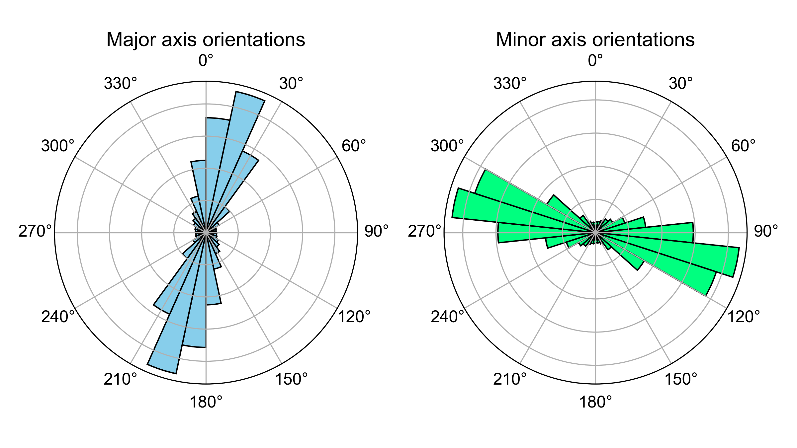

钻孔椭圆度项目包含的代码可根据声波电视（ATV）测井数据计算钻孔（横截面）椭圆度，并根据钻孔椭圆度反演原位应力状态。
这些代码托管在中国科学技术大学地质力学小组的私有云服务器上，可通过 此处 访问。

borehole_ellipticity.py # 根据 ATV 旅行时间测井数据计算钻孔椭圆度。
stressinv/ # 应力反演代码。
stressinv_ellipticity.m # 根据钻孔椭圆度反演应力状态（整个钻孔）
stressinv_ellipticity_depthwise.m # 根据钻孔椭圆度反演不同深度区间的应力状态
stress_vector_to_strike_dip.m
compute_aphi.m
euler_angle_to_stress_vector.m
RMSE_azimuth.m
EllipAxisOrien.m
vis/ # 数据可视化代码。
dispCSV.py # 显示 ATV 测井数据。
dispCrossSection.py # 显示钻孔横截面。
dispEllip.py # 显示钻孔椭圆度参数。
data/ # 示例数据。
ST1_20210305_DEV_ATV_up_main_TT_NM.csv # ATV 旅行时间测井数据。
ST1_20210305_DEV_ATV_up_main_AMP_NM.csv # ATV 振幅测井数据。
ST1_20210305_DEV_ATV_up_main_AZIMUTH.csv # ATV 测量的钻孔方位角数据。
ST1_20210305_DEV_ATV_up_main_TILT.csv # ATV 测量的钻孔倾斜角数据。
ST1_20210305_DEV_ATV_up_main_WNDTIME.csv # ATV 声波窗口旅行时间测井数据。
borehole_ellipticity_outputs/
ellipticity_parameters.csv # 钻孔椭圆度参数。
centralized_traveltime.csv # 中心化的 ATV 旅行时间数据。
borehole_radius.csv
borehole_cross_section_azimuths.csv
functions.py
requirement.txt使用 conda 命令创建一个 Python 版本大于等于 3.10 的环境：
conda create -n ellipticity python=3.10
从 云服务器 下载项目到本地设备的一个文件夹中。
然后进入该文件夹，使用 pip 命令安装所有所需的包：
pip install -r requirements.txt
最后，使用 conda 命令激活环境：
conda activate ellipticity
现在你已完成所有设置。
要计算钻孔椭圆度，你需要打开以下 Python 脚本：
borehole_ellipticity.py
该脚本对从 ATV 旅行时间测井数据得出的钻孔横截面进行最小二乘椭圆拟合。
然后，编辑输入部分，该部分已经为演示进行了配置：
# ---------------------- 输入部分 ---------------------- #
# ATV 旅行时间测井数据的文件路径。
fp_tt = './data/ST1_20210305_DEV_ATV_up_main_TT_NM.csv'
# ATV 工具声波窗口旅行时间（AWT）测井数据的文件路径。
# 可选。如果没有可用数据，请输入 None。
# AWT 是声波信号在 ATV 工具内的双向旅行时间。
fp_wtt = './data/ST1_20210305_DEV_ATV_up_main_WNDTIME.csv'
# 当 AWT 测井数据不可用时，定义一个 AWT 值（与 ATV 旅行时间单位相同）。
# 可选。如果 AWT 测井数据可用，请输入 None。
wtt = None
# ATV 工具声波头的半径（单位：米）。
rp = 0.019 # ALT-QL40-ABI 的参考值。
# 钻孔流体的声速（单位：米/秒）。
vf = 1480
# 将 ATV 旅行时间单位转换为毫秒的乘数。
# 如果不需要，请输入 None。
beta = None
# ATV 旅行时间测井数据的掩码文件路径，该掩码将部分排除旅行时间数据进行椭圆拟合。
# 可选。
fp_mask = None
# 输出目录。
dir_out = './data/borehole_ellipticity_outputs'
# ----------------------------------------------------------- #然后，运行代码。
输出结果默认存储在 data/borehole_ellipticity_outputs 文件夹中。椭圆度参数保存在
ellipse_parameters.csv 文件中：
| 深度 | 长轴方位角 | 短轴方位角 | 长轴直径 | 短轴直径 | 中心 x 坐标 | 中心 y 坐标 | 拟合误差 |
|---|---|---|---|---|---|---|---|
| 米 | 度 | 度 | 毫米 | 毫米 | 毫米 | 毫米 | 毫米 |
| 213.3626099 | 27.2013076 | 117.2013076 | 218.1290569 | 217.1751262 | -7.505987566 | -9.398823525 | 0.618327876 |
| 213.3667755 | 37.70659401 | 127.706594 | 218.1568949 | 217.2814357 | -7.510627093 | -9.334088801 | 0.594598325 |
| 213.3709412 | 37.70659401 | 127.706594 | 218.1568949 | 217.2814357 | -7.510627093 | -9.334088801 | 0.594598325 |
| … | … | … | … | … | … | … | … |
参数说明：
一些副产品也会保存到输出文件夹中：
centralized_traveltime.csv：中心化的 ATV 旅行时间测井数据。borehole_radius.csv：圆周方向的钻孔半径测井数据。borehole_cross_section_azimuths.csv：校正后的 ATV 旅行时间测井数据方位角。有两种方法可以显示钻孔椭圆度：一种是在测量深度上显示椭圆度参数，另一种是在钻孔横截面上显示。
打开 vis/dispEllip.py 脚本，并编辑输入部分，该部分已经为演示进行了配置：
# ---------------------- 输入部分 ---------------------- #
# 椭圆度参数的文件路径。
ellip_fpath = '../data/borehole_ellipticity_outputs/ellipticity_parameters.csv'
# 使用以下 dz 间隔在测量深度上对椭圆度参数进行重采样。
# 你可以输入 None 跳过重采样（米、英尺或其他长度单位，具体取决于 ATV 测井数据中的测量深度）。
dz = 0.1
# ATV 振幅测井数据的文件路径。
fp_atvAmp = '../data/ST1_20210305_DEV_ATV_up_main_AMP_NM.csv'
# 钻孔半径测井数据的文件路径。
fp_atvRad = '../data/borehole_ellipticity_outputs/borehole_radius.csv'
# ATV 振幅测井数据的颜色映射。
cmapAmp = 'gray'
# ATV 旅行时间测井数据的颜色映射。
cmapRad = 'gray_r'
# ATV 测量的钻孔倾角的文件路径。
fp_atvInc = '../data/ST1_20210305_DEV_ATV_up_main_TILT.csv'
# ATV 测量的钻孔方位角的文件路径。
fp_atvAzi = '../data/ST1_20210305_DEV_ATV_up_main_AZIMUTH.csv'
# 显示长度（米、英尺或其他长度单位，具体取决于 ATV 测井数据中的测量深度）。
lenZ = 5
# ----------------------------------------------------------- #然后，运行代码。
它将弹出两个窗口。
一个是包含椭圆度参数、ATV 测井数据以及 ATV 测量的钻孔倾角和方位角的多列图形：

另一个窗口包含两个玫瑰图，分别显示椭圆长轴和短轴方位角的方向：
